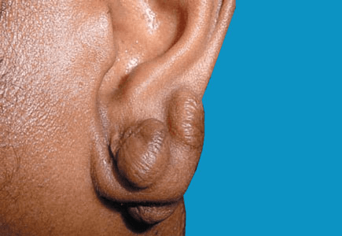

When a wound heals, it leaves a scar. A keloid is a special type of scar: one that grows too much and can even become larger than the original wound. It is not uncommon for surgical or injury scars to become a little lumpy (hypertrophic). A keloid differs from these in several ways:
They can be - a tendency to get keloids certainly runs in some families.
Usually there are none; but some are tender, painful, itchy, or cause a burning sensation. The main problem is that their appearance may cause embarrassment. If they are very tight, they can limit movement at nearby joints.

It is unusual for a keloid to be cured after treatment. The main problem is that cutting a keloid out often leads to an even bigger one forming later in the same place.